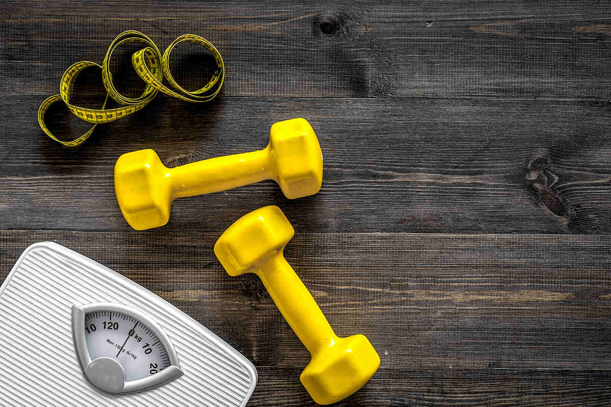
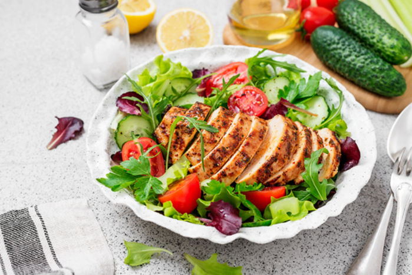

Vücut kitle endeksi(BMI), sahip olunan vücut yağ miktarını tahmin etmek için boy ve kilo ölçümlerinden elde edilen verilerin kullanıldığı tıbbi bir tarama aracıdır. Aşağıdaki hesaplama aracını kullanarak vücut kitle endeksinizi (VKİ) hemen hesaplayabilirsiniz.
Vücut kitle endeksi (VKE), yetişkin bir bireyin kilosunun boyuna göre oranının ölçülmesi ile kişinin ideal kiloda olup olmadığını gösteren bir parametredir. İngilizcede "Body Mass Index (BMI)" şeklinde, Türkçe'de ise "Vücut Kitle Endeksi (VKE)" olarak ifade edilir. Kişilerin kolay ulaşabileceği ve cinsiyet, yaş, ırk ayrımı yapılmadan toplumdaki her bireye aynı şekilde uygulanabileceği için en yaygın olarak kullanılan boy-kilo parametresidir.
Matematiksel olarak kişinin kilosunun boyunun karesine bölünmesi ile vücut kitle endeksi bulunur. Bu ölçümle kişinin olması gereken kilo aralığı tayin edilebilir. Diyet planı uygulamak için yeterli bir ölçüm olmasa da vücut kitle endeksi, kişinin yaşına ve boyuna göre uygun bir kiloda olup olmadığına dair genel bir fikir verebilir.
Dünya Sağlık Örgütü, BMI sonuçlarını 20 yaşın üzerindeki yetişkinler için 6 farklı şekilde sınıflandırır. Aşağıdaki Dünya Sağlık Örgütü’nün vücut kitle indeksi (vki) kaç olmalı sorusunun cevap sınıflandırmada kullandığı oranlar listelenmiştir:
Eğer sonucunuz 24.9’un üzerinde çıktıysa kilonuzun olması gerekenden fazla olduğu anlamına gelir. Bu oran ne kadar yükselirse, olması gereken kilonuzun o kadar üzerine çıktığı sonucuna varabilirsiniz.
Bazal metabolizma, vücudun dinlenirken kullandığı minimum ya da temel enerji miktarıdır. Aşağıdaki hesaplama aracını kullanarak bazal metabolizma hızınızı hemen hesaplayabilirsiniz.
Vücudun solunum, dolaşım, elektron iletimi, yeni hücre sentezi gibi en temel işlevlerini yerine getirmesi için ihtiyaç duyduğu kalori miktarı bazal metabolizma hızını verir. Bu miktar ne kadar yüksekse bazal metabolizma hızı da o derece yüksek olur. Laboratuvar koşulları altında hiç hareket etmeksizin çok kısıtlayıcı koşullar altında ölçülür. Bazal metabolizma hızını etkileyen faktörler şunlardır:
Bazal metabolizma hızı hesaplama, günlük harcamanız gereken kalori miktarına ulaşmanızı sağlar. Sağlıklı bir kiloya sahip olmak ya da formunuzu korumak istiyorsanız öncelikle bazal metabolizma hızınızın kaç kalori olduğunu bulmanız ve ardından da yaşam tarzına bağlı olarak günlük kalori ihtiyacınızı hesaplamanız gerekir. Aldığınız kaloriden daha az ya da daha yüksek kalori tüketirseniz, kalori açığı ya da kalori fazlası sağlayabilir ve ideal kilonuza ulaşabilirsiniz. Bazal metabolizma hızını hesaplamak için en çok kullanılan yöntemlerden biri “Harris- Benedict” formülüdür. Harris Benedict formülüne göre;
İdeal kilonuzu etkileyen birden fazla faktör vardır. Yaş, cinsiyet, kas kütlesi, genetik, etnik köken ve fiziksel aktivite seviyeleri bu faktörlerden yalnızca birkaçını oluşturur. Birçoğumuz bu sihirli rakamı tartıda ararken gerçek ideal bir ağırlığın olmadığı yönünde. Aşağıdaki hesaplama aracından ideal kilo oranınızı hesaplayabilirsiniz.
Sağlıklı bir kiloyu korumak bedensel ve zihinsel refah için oldukça önemli olmasının yanı sıra hastalık riskini azaltıyor olsa da bunun başarının tek ölçüsü olmadığını bilmek önemlidir. Ölçek dışı bazı etkilere, bel çevresi ölçümü gibi sağlık sonuçlarına ve kondisyon seviyelerinizdeki iyileşmelere dikkat etmek, sağlıklı alışkanlıkları güçlendirmeye yardımcı olabilir. Kilonuz ve sağlığınız söz konusu olduğunda öne çıkan şey metabolik durumunuzu hep en üst seviyede tutabilmektir.
İnsan vücudunun hayatta kalabilmesi ve günlük faaliyetlerini sürdürebilmesi için belirli miktarda kaloriye ihtiyacı vardır. Kişinin boy, kilo gibi belirli özelliklerine göre değişen bu kalori miktarına günlük kalori ihtiyacı denir. Aşağıdaki hesaplama aracını kullanarak günlük kalori ihtiyacınızı hemen hesaplayabilirsiniz.
Günlük kalori ihtiyacınızı bazal metabolizma hızınızı kullanarak hesaplayabilirsiniz.
Tanım olarak BMR, dinlenme halindeki metabolizma hızıdır. Solunum, sindirim ve dolaşım gibi fonksiyonları sürdürmek
için gereken minimum enerji seviyesidir. İlgili formül genellikle vücut ağırlığını korumak için ihtiyaç duyulan enerjiyi
azaltarak kilo vermek için kullanılır.
Bir insanın günlük kalori ihtiyacı hesaplama formülü ile bazal metabolizma hızınızı sayısal bir değere
dönüştürebilirsiniz. Bu formül cinsiyetinize, yaşınıza ve vücut ölçülerinize göre belirlenir. Hareketsizken
ne kadar kalori yaktığınızı söyleyen bu formül şu şekilde hesaplanır:
Yataktan kalkıp hareket etmeye başladığınızda daha fazla enerji harcayacağınız için bu rakamı ayarlamanız gerekecektir.
Vücudun yaşamsal faaliyetlerini devam ettirebilmesi için gerek duyduğu günlük su miktarına günlük su ihtiyacı denir. Aşağıdaki hesaplama aracını kullanarak günlük su ihtiyacınızı hemen hesaplayabilirsiniz.
Suyun önemi ve vücut için gerekliliği göz önünde bulundurulunca suya duyulan ihtiyacın, beslenme ihtiyaçlarımızdan çok daha fazla olduğunu görmek mümkün. İşte günlük düzenli su tüketiminin ön plana çıkan faydaları:
Günlük su ihtiyacınızı belirlerken yaşınız, cinsiyetiniz, yaşam tarzınız ve sağlık durumunuz gibi pek çok faktör göz
önünde bulundurulmalıdır. Ancak genel hesaplamalarda kilonuza göre günlük su ihtiyacınızı hesaplayabilirsiniz.
Günlük su ihtiyacı formülü şu şekildedir:
Günlük Su İhtiyacı (lt): Kilo (kg) x 0.033